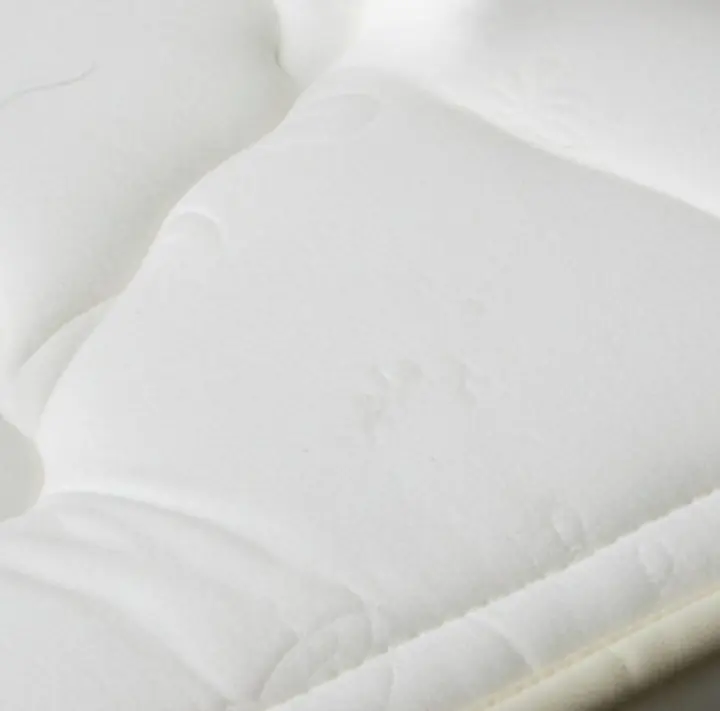
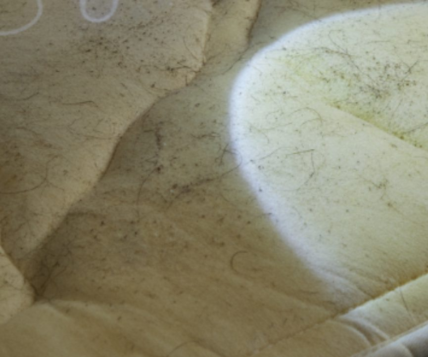
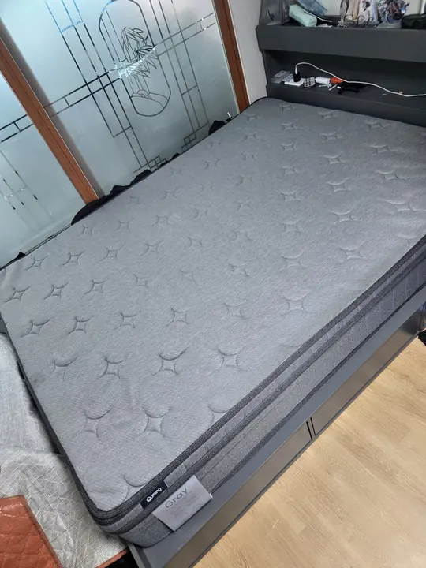
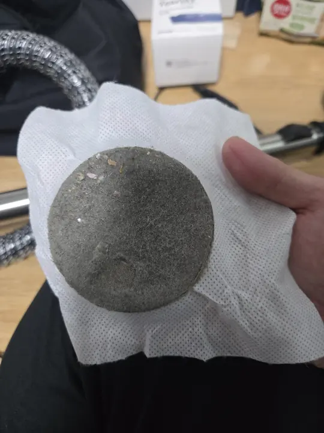
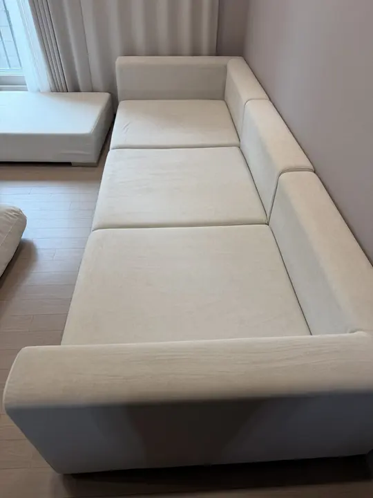
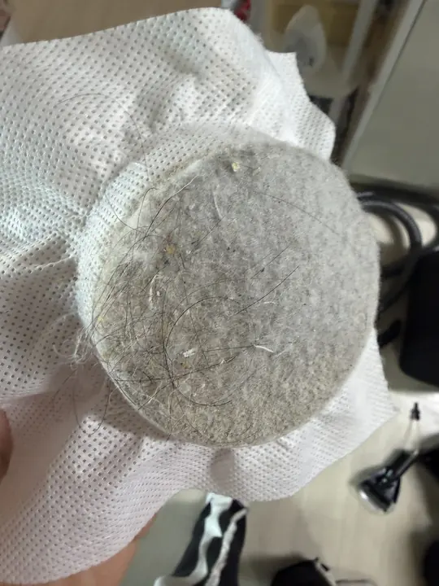
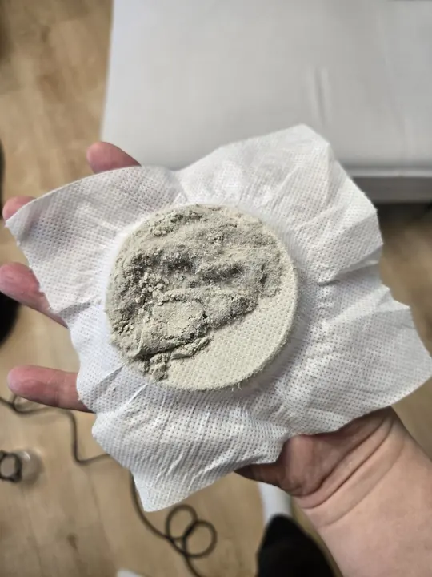

병상 매트리스
커버는 바꿔도 본체는 몇 년째 그대로입니다. 땀과 각질이 폼 안쪽에 쌓이면 소독 스프레이로는 닿지 않습니다.
매트리스 케어 보기인프는 주식회사 인프가 병원·의원·요양병원·산후조리원을 대상으로 하는 청소 서비스입니다. 정기청소와 병상 매트리스·대기실 소파·바닥 전문청소를 단계별로 나눠 맡고, 장비와 인력, 약품을 모두 직접 운용합니다.
환자와 보호자가 먼저 느끼는 곳은 정해져 있습니다. 냄새와 얼룩이 남는 곳, 그리고 기록이 비어 있는 곳부터 짚었습니다.
커버는 바꿔도 본체는 몇 년째 그대로입니다. 땀과 각질이 폼 안쪽에 쌓이면 소독 스프레이로는 닿지 않습니다.
매트리스 케어 보기하루 수십 명이 앉습니다. 패브릭 표면을 닦는 것과 섬유 속 오염을 뽑아내는 것은 다른 작업입니다.
소파 추출 청소코팅층이 벗겨지면 오염이 바닥재에 바로 뱁니다. 침대와 카트 바퀴 자국도 이때부터 잘 빠지지 않습니다.
바닥 청소·코팅"지난달에 했다"는 말은 기록이 아닙니다. 평가나 내부 감사 때 꺼낼 수 있는 날짜와 사진이 필요합니다.
기록 남기는 방식정기청소로 기준선을 먼저 잡고, 바닥 상태를 보고 2단계를, 패브릭 오염도를 보고 3단계를 붙이는 순서를 권합니다. 단계마다 따로 계약할 수 있습니다.
| 기관 | 권장 주기 |
|---|---|
| 외래 중심 의원·클리닉 | 주 1~2회 |
| 입원 병동이 있는 병원 | 주 2~3회 |
| 산후조리원 | 주 2~3회 + 산모실 매트리스 건식 매회 |
| 항목 | 1단계 정기 | 2단계 바닥 | 3단계 패브릭 |
|---|---|---|---|
| 주기 | 주 1~3회 | 연 1~2회 | 6~12개월 |
| 계약 | 월 단위 | 건별 | 정기 연계 |
| 단가 기준 | 평당 | 평당 | 수량당 |
| 장비 | 일반 + 건식 | 스크러버·코팅 | 추출·스팀·UV |
| 건조 | 필요 없음 | 구역별 필요 | 2~4시간 |
진료를 멈추지 않는 것을 전제로 일정을 짭니다. 전체를 한 번에 막지 않고, 구역을 나눠 기간을 늘리는 쪽을 택합니다.
층·병동·기능(외래/병동/사무)별로 나누고, 오염이 빨리 쌓이는 구역을 짧은 주기로 잡습니다. 작업 구역과 시간은 전날까지 담당자에게 알립니다.
투입 인력 명단과 사용 자재 목록을 미리 내고, 원내 지침에 맞춰 이동합니다. 오염 구역과 청결 구역 도구는 섞지 않습니다.
구역별로 같은 각도에서 찍은 작업 전후 사진, 사용 자재, 방역 완료 증명서를 한 문서로 묶어 매달 보내드립니다.
실제 배치는 실측 때 외래 종료 시각, 병동 교대 시간, 주말 출입 가능 여부를 확인한 뒤 기관마다 따로 짭니다.
눈에 안 보이는 청소는 한 적이 없는 것과 같습니다. 시공 이력을 환자·보호자·간호 인력이 볼 수 있게 세 가지 장치를 함께 둡니다. 비용은 정기계약에 포함하는 것을 기본으로 합니다.
접수 데스크 옆에 A3 거치형 스탠드를 둡니다. 이번 달 어떤 구역을 어떤 공정으로 관리했는지, 다음 작업일이 언제인지 적힙니다.
의료기관 게시물은 원내 규정과 환자 동선에 따라 설치 여부가 달라집니다. 실측 때 위치와 문구를 같이 정하고, 원하지 않으시면 라벨만 운영해도 됩니다.
| 1층 대기실 소파 6개 | 습식 추출·스팀 |
| 3 · 4층 병동 매트리스 | 건식·얼룩 제거 |
| 로비·복도 바닥 | 타일 청소·코팅 |
| 전 구역 | 월 1회 방역 |
매트리스 아래쪽, 소파 옆면처럼 눈에 띄지 않는 곳에 마지막 작업 날짜를 적은 라벨을 붙입니다. 간호 인력이 바뀌어도 언제 작업했는지 바로 확인할 수 있습니다.
병동별로 주기가 밀린 구역을 찾는 데도 씁니다. 날짜가 물건에 붙어 있어야 평가·감사 자료로도 쓸 수 있습니다.
구역별로 같은 각도에서 찍은 작업 전후 사진, 사용 자재, 방역 완료 증명서를 한 문서로 묶어 매달 담당자 메일로 보냅니다.
원하시면 안내 스탠드에 QR을 붙여 보호자도 볼 수 있게 공개 범위를 조정합니다.

인프 현장팀이 직접 찍은 사진입니다. 병원 매트리스와 대기실 소파도 같은 장비와 공정으로 작업합니다.

 작업 전작업 후
작업 전작업 후
매트리스 얼룩 제거 (손잡이를 좌우로 밀어 비교)
카드를 누르면 그 가구를 청소하고 나온 흡입 필터가 보입니다.

그레이 매트리스가구
이 매트리스에서 나온 필터필터
화이트 패브릭 소파가구 이 소파에서 나온 필터필터
이 소파에서 나온 필터필터 패턴 매트리스가구
패턴 매트리스가구
이 매트리스에서 나온 필터필터 ㄱ자 패브릭 소파가구
ㄱ자 패브릭 소파가구
이 소파에서 나온 필터필터스크롤하면 단계가 넘어갑니다.
약품 없이 자외선으로 표면을 처리합니다. 젖지 않아 바로 다음 공정으로 넘어갑니다.
섬유 속 먼지와 각질을 먼저 걷어냅니다. 이 순서를 건너뛰면 먼지가 물과 뭉쳐 얼룩이 됩니다.
소재별 전용 세정제로 얼룩을 분해한 뒤 추출합니다.
잔여 오염물과 세균을 고온 스팀으로 처리합니다.
소파 하부, 매트리스 측면과 틈새까지 들어갑니다.
공기를 정화하고 마무리합니다. 신생아 구역은 무향으로 마감합니다.
2021년부터 수도권에서 정기청소와 패브릭·바닥 전문청소를 해 왔습니다. 장비도, 인력도, 약품도 직접 운용합니다.

이 밖에도 호텔·병원·공장·학교·관공서 등 여러 현장에서 함께하고 있습니다.
장비를 빌리지도, 재하도급을 주지도 않습니다. 중간 마진이 빠진 만큼 단가를 낮춰 제안합니다.
층·구역별로 나눠 야간과 주말에 진행합니다. 객실도, 병실도, 생산 라인도 세우지 않습니다.
무독성 자재만 씁니다. 사용 자재는 목록으로 미리 드리고 현장에서도 확인해 드립니다.
기관 유형, 대략적인 면적, 병상 수, 바닥 소재만 알려주시면 됩니다.
무료입니다. 견적을 받으셔도 계약 의무는 없습니다.
구역별 단가, 작업 주기, 시간대를 문서로 드립니다. 세금계산서를 발행합니다.
야간·주말 등 협의한 시간대에 구역을 나눠 진행합니다.
담당자와 작업 전후를 확인하고 리포트를 제출합니다.
인천 남동구 본사에서 수도권 전역으로 갑니다. 그 밖의 지역은 규모를 보고 상담 후 안내드립니다.
| 권역 | 지역 | 실측·출장 |
|---|---|---|
| 인천 | 남동구·연수구·미추홀구·부평구·서구·계양구·중구·동구 | 무료 |
| 서울 | 서울시 전 지역 | 무료 |
| 경기 서부 | 부천·김포·시흥·광명·안산 | 무료 |
| 경기 남부·북부 | 수원·성남·용인·고양·의정부 등 | 무료 |
주식회사 인프가 병원·의원·요양병원·산후조리원 같은 의료시설을 대상으로 하는 청소 서비스입니다. 정기청소, 바닥 청소·코팅, 병상 매트리스·대기실 소파 전문 케어를 단계별로 나눠 계약할 수 있고, 정기청소 풀패키지에는 월 1회 방역이 들어갑니다. 수도권 전역 현장 실측과 출장은 무료입니다.
외래 진료가 끝난 뒤나 주말에 들어가는 것을 원칙으로 합니다. 병동은 층별·구역별로 나눠 해당 구역만 비우고 진행하므로 전체가 막히지 않습니다. 24시간 운영 병동은 간호 스테이션과 시간대를 맞춰 교대 시간을 피합니다.
KC 인증을 받은 친환경·무독성 자재만 사용하고, 사용 자재 목록은 작업 전에 제출하고 현장에서도 확인해 드립니다. 산후조리원 신생아실·수유실은 무향 자재만 쓰고, 작업 후 충분히 환기한 뒤 인계합니다.
하는 일이 다릅니다. 상주 미화는 매일의 유지 관리이고, 인프가 맡는 건 장비와 약품이 필요한 주기성 작업입니다. 매트리스 추출 세정, 바닥 코팅, 카펫 딥클리닝은 전용 장비 없이는 되지 않습니다. 기존 인력을 대신하지 않고 그 위에 얹는 구조로 제안드립니다.
정기청소는 평당 2,000~5,000원(월), 바닥 청소는 평당 8,000원부터(1회), 패브릭 전문 케어는 대기실 소파 3인용 80,000원·입원실 매트리스 싱글 60,000원이 기준이며 정기계약 기관은 패브릭 케어를 20% 할인합니다. 모두 부가세 별도 참고 단가이고, 현장 실측 후 구역별로 확정합니다. 요금표와 견적 계산기에서 미리 계산해 보실 수 있습니다.
됩니다. 사업자 간 거래로 세금계산서를 발행하고, 연간 정기계약은 별도 계약서로 진행합니다. 입찰이나 수의계약에 필요한 서류가 있으면 기관 양식에 맞춰 제출합니다.
됩니다. 단발 작업이라고 공정을 줄이지 않습니다. 다만 오래 쌓인 오염은 한 번으로 끝나지 않는 경우가 많아, 받아보신 기관은 대부분 주기를 정해 정기계약으로 넘어갑니다.
문의 후 1~2일 안에 방문 일정을 잡습니다. 실측은 무료이고 견적을 받으셔도 계약 의무는 없습니다. 병상 수, 대기실 규모, 바닥 소재 정도만 미리 알려주시면 되고, 실측 다음 날 구역별 단가와 작업 시간대를 문서로 드립니다.
인천 남동구 본사를 기점으로 서울·인천·경기 수도권 전역에 실측과 출장을 무료로 갑니다. 그 밖의 지역은 규모에 따라 상담 후 안내드립니다.
아니요. 인프(INPE)는 청소·방역 서비스를 하는 주식회사 인프의 브랜드로, 성격유형 검사 MBTI의 INFP(인프)와는 관련이 없습니다.
신청서를 남기시면 영업시간 안에 담당자가 연락드려 실측 일정을 잡습니다. 급하시면 전화가 가장 빠릅니다.